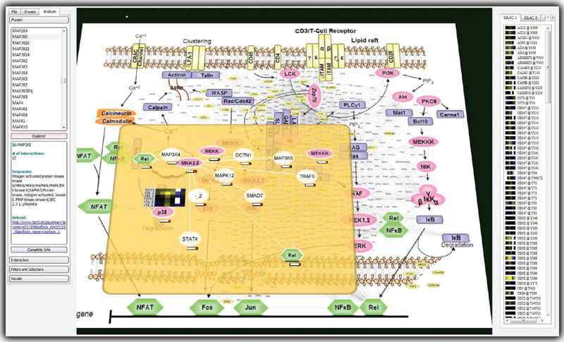

|
Analysis of a protein interaction network in the context of the T-cell pathway. Proteins and interactions dynamically extracted from the HPRD database (small fonts scattered between the protein icons in the pathway view) are integrated directly into an imported image of a canonical signaling pathway. Heatmaps representing quantitative data from multiple experiments appear on the right and are used to drive analysis. Focus+Context is implemented as a semitransparent plane hovering over the global image and allows researchers to navigate through complex networks in a one-level-at-a-time mode. |